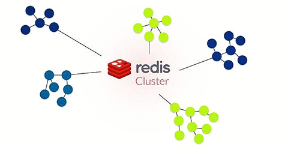

是什么
Redis集群模式可以相对主从模式、哨兵模式而言
- 主从模式：类似于Mysql的主从复制，解决读写分离和数据备份，但无法自动故障转移、动态扩容
- 哨兵模式：可以实现主从切换，但依旧无法动态扩容
- 集群模式：闪亮登场，无中心结构、数据分片、内置高可用
为什么
Redis单实例存在单点，容量有限，流量压力上限等问题
因此为了降低运维成本，提高系统的扩展性和可用性，集群模式是个非常棒的选择。
工作原理
数据分区
1.随机
随机选取一个存储并访问
一般结合 list，用于非顺序性要求的消息队列场景
缺点：使用场景比较单一，并且持久化存在不可靠性（应该没人会用这种方式吧…
2.固定取模哈希
对于一个 key，首先计算 hash 值，然后对节点数取模打在对应的 master 节点上
举例：
| Server | Weight | VirtualServer |
|---|---|---|
| Server1 | 1 | 1 |
| Server2 | 2 | 2,3 |
| Server3 | 3 | 4,5,6 |
1 | virtual_server_index = hash(key) % (total_virtual_weight) |
例如某个key哈希后的值为10，则10%6=4，则会访问Server3
缺点：由于是固定取模，在新增节点或者某个节点宕机情况下，所有数据都会重新洗牌，无法热迁移，流量可能会直接压到数据库上
3.一致性哈希
一致性哈希算法最早在论文《Consistent Hashing and Random Trees: Distributed Caching Protocols for Relieving Hot Spots on the World Wide Web》中提起。
他将整个 hash 值空间按顺时针方向组织成一个虚拟的圆环，接下来将各个 master 节点进行 hash，确定每个节点在其哈希环上的位置。
对于某个key，根据它的哈希值确定在环上的位置，则顺时针方向的下一个节点就是它所在的位置。
如果增减节点，影响得知识该节点与上一个节点之间的数据。
缺点：可能存在节点在环上分布不均导致访问热点，一般通过引入虚拟节点对一个真实节点计算多个虚拟节点哈希的方式，来达到数据均匀分布，负载均衡。
4.哈希槽
与一致性哈希相似，区别在于它预先分配好真实节点管理的哈希槽，而客户端通过API获取的是Key对应的哈希槽，而不是机器
当某个机器宕机之后，会将它管理的哈希槽转移到其他机器上
- 集群情况下，也会将客户端重定向到正确的节点:white_check_mark:
- 非集群情况下，会直接报错给客户端，告诉它应该访问哪个节点
通信机制
集群元数据（节点信息、故障信息、权限等）的维护主要有以下两种方式：
1.集中式
集中式是有专门的节点来管理元数据，例如zookeeper
- 优点：时效性高
- 缺点：元数据更新都在单个节点上，存在风险且压力较大
2.Gossip协议
Redis采用的就是这种方式，Gossip协议是所有节点都持有一份元数据，不同的节点如果出现了元数据的变更，就不断将元数据发送给其它的节点，让其它节点也进行元数据的变更
- 优点：更新比较分散，降低压力
- 缺点：时效性较差
高可用
集群的高可用原理，与哨兵模式类似
1.判断节点宕机
在cluster-node-timeout内，某个节点一直没有返回pong，那么就被认为pfail（主观宕机）
如果一个节点认为某个节点pfail了，那么它会ping给其他节点，当超过半数的节点都认为pfail了，那么就是fail（客观宕机）
2.从节点过滤
从节点选举为主节点之前，会先进行过滤，检查每个从节点与主节点断开连接的时间，如果超过了cluster-node-timeout * cluster-slave-validity-factor，那么就没有资格切换成主节点
3.从节点选举
每个从节点，都根据自己对主节点复制数据的 offset，来设置一个选举时间，offset 越大（复制数据越多）的从节点，选举时间越靠前，优先进行选
所有的主节点开始进行选举投票，当大部分主节点（N/2 + 1）都投票给了某个从节点，那么选举通过，那个从节点可以切换成主节点，开始执行主备切换，从节点切换为主节点
集群方案
占坑…
搭建指南
占坑…


如果长时间无法加载，请针对 disq.us | disquscdn.com | disqus.com 启用代理